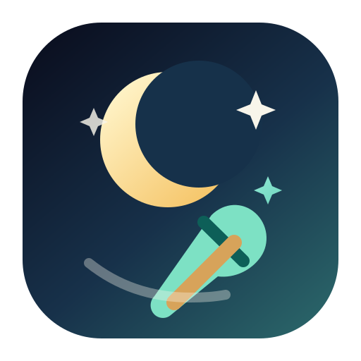

Community
$0
For developers who want trust-first cleanup and receipts today.
- CLI cleanup and previews
- Local MCP server for Claude, Codex, and VS Code
- JSON and HTML receipts
- Balanced-safe scheduling
- GitHub-first install and update

Pricing
DreamCleanr keeps the trust-building core free. Paid value comes later through the premium macOS shell and richer native workflows, not through fake scarcity or paywalled safety.
$0
For developers who want trust-first cleanup and receipts today.
$29 launch / $49 standard
For serious AI developers who want a premium local shell and better workflow visibility.
$199 / year for up to 5 Macs
For small teams that need policy packs, repeatable rollout, and admin-friendly reporting later.
DreamCleanr earns trust by keeping the core engine, receipts, and scheduling free. Pro becomes credible only when the native shell makes local cleanup meaningfully easier.
DreamCleanr does not present Pro or Team as a live purchase until those product layers are real. The current call to action is adoption, proof, and early interest.
DreamCleanr ships a local MCP server for Claude, Codex, and VS Code today. The setup guide keeps those client configs in one grounded place.
Open MCP setupUse the FAQ for product-boundary questions and the comparison page when you want a clear fit check against broader consumer utilities.